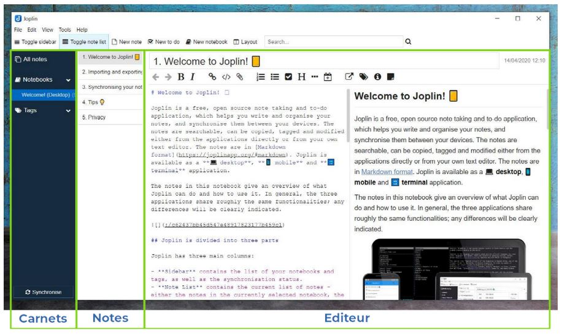

Joplin
Joplin is a note-taking application with many features.
It is an open-source and completely free software that allows you to create notes in the “Markdown” writing language, and to organize them in “notebooks,” and associate them with tags. It is an excellent alternative to software such as Evernote or Microsoft One Note.
Joplin Features
Joplin makes organization much easier, replacing in one place any need for post-its, notebooks or task lists.
In particular, Joplin allows you to:
- Gather all your written or graphic information in one place: your class notes, your thoughts, your projects, your recipes, your shopping lists, your to-do lists, etc.
- Find all this information very quickly (in a few seconds) thanks to the search tools.
- Use it on any computer (Windows, Mac, Linux) and on any phone (android, IOs).
- Synchronize your data on the cloud you choose : Nextcloud (see below), Google Drive, One Drive, etc. So you can have all your data written everywhere, all the time, on any media.
- Secure all your texts by encrypting them with a password.
- Have a fully customizable interface that allows you to focus totally on what you are writing, so that you don’t waste time and attention.
- Export your notes in many ways, with a format (markdown) that can be read anywhere and at any time.
- Automatically manage the images and files you insert in your notes.
- Automatically edit your notes (so you can go back at any time if you made a mistake).
- And much more.
The Markdown syntax

Markdown is an easy to read and write syntax for formatting text that is widely used today. By the way, please note that the document in this workshop is written in markdown!
The markdown syntax consists of a set of rules that indicate how the text should be formatted into a “classic” text format that can be read by any text editor. The text will then be formatted by a program to read it, or to make it a document to be published or shared.
Here are some examples that will allow you to better understand the Markdown syntax:
Here are some examples that will allow you to better understand the Markdown syntax:
The word **markdown** is in bold.
This makes the following appearance when formatted by a software like Joplin:
The word markdown is in bold.
To indicate a link is written :
A link to the [wikipedia page](https://fr.wikipedia.org/wiki/Markdown) of markdown.
This gives:
A link to the wikipedia page of markdown.
To learn more about markdown syntax, you can visit the corresponding wikipedia page, which contains many examples. But don’t worry: Joplin offers many tools and examples so you don’t have to learn this syntax.
The advantages of Markdown are numerous :
- A Markdown document is a text document that can be opened with any text editor (notepad, Notepad++, Atom, etc.).
- Editing a document in markdown allows you to focus on the meaning of what you are writing, without worrying about the appearance: this is the “What you see is what you mean” philosophy. This philosophy is the opposite of the “what you see is what you get” philosophy found in software such as Microsoft Word, in which you edit both the content of the document and its format at the same time.
- A Markdown document can be read in different ways by programs that will put it in form (of which there are many), and which can transcribe it into many different formats (.pdf, .html, etc.) and with different appearances (font, colors, etc.) very quickly.
Reading all this, if you don’t know Markdown yet, you’re probably skeptical. But don’t worry: Joplin allows you to bypass Markdown if you don’t like it. But you’ll find that trying it is usually the same as adopting it.
Installing Joplin
- Simply go to the software’s web page
- Choose the version corresponding to your operating system: Windows, Mac or Linux.
- Launch the installer and follow the instructions.
💡 If you wish to have the interface in your native langage, think of indicating it during the installation. If you have not done so, you can change the language in “Tools” then “Options” then “General.”
Getting started with Joplin
Interface
By default, the Joplin window consists of 3 important parts:
- the list of your notebooks on the left.
- the list of notes inside the notebook you are in, in the middle.
- the editor on the right, which is usually displayed in two parts (the editing part, and the viewing part).

The essential
What you need to know to understand the basics of how Joplin works:
- Notebooks can contain notes, or other notebooks.
- Notes are written in markdown syntax.
- Notes can be associated with one or more tags, which allow you to find them more easily
- The editor shows you both the document written in Markdown language (left), and its appearance once formatted by the Joplin theme you have chosen (right).
- The editor contains various buttons to easily format the Markdown text (bold, italic, link, list, title, etc.).
- Joplin contains a notebook with a few notes summarizing all the features of the program; do not delete them! They may be very useful to you.
- With the command
Ctrl + P, you can access the search bar which allows you to find a note in a few seconds. Just type words related to the note.
Exercises
It would be possible for me to list all the features of Joplin; but that would be very long to read (there are many), and rather boring. Through some exercises, I encourage you to discover them by yourself.
1. Create a notebook
- In Joplin, create a new notebook, named “📔 Notebook for exercise.”
💡 Note the possibility of putting emojis in the titles of your notebooks and your notes to better differentiate them.
2. Create a note
- In the “Notebook for Exercise,” create a new note named “Note for Exercise” with the “New Note” button.
3. Inserting an image in a note
- Open the note “Note for Exercise” in the editor.
- Go to this link.
- In your browser, right click on the image, and choose
Copy. - Go back to your note. Right click in the editor and choose
Paste, or pressCtrl + V.
{kind=link}
💡 Joplin handles all files associated with your Markdown documents automatically, whether it’s an image, an excel spreadsheet, or something else. It is only able to display images, and other file types will be represented as a link that will allow you to open them. All files are kept in its database, and it is even possible to edit them by clicking on the link. Extremely practical to find your way around!
4. Create a task and a task list
- In the “Exercise Book,” create a new task named “Exercise 4 Task” with the “New Task” button.
💡 In Joplin, tasks are simply notes that are associated with a checkbox. However, you can, as with any note, associate files, images, and text with them.
- In the editor, write the following (be careful to respect spaces!):
- [ ] Make a new task in Joplin
- [ ] Write a task list in the Markdown text of this task
- [ ] Check the boxes in this task list
- [ ] Check the task- Look at the formatted text of your task on the right side of the editor. Click on the various check boxes, and see what happens.
- When this is done, check your checkmark in the Joplin Notes window. Watch what happens.
💡 You have discovered one of the most useful features of Markdown: checkboxes. In text format, an unchecked box is written “
- [ ],” and a checked box is written “- [x].”
6. Changing the interface
- Go to the “Display” tab, then click on the “Change application layout” option.
- Use the arrows on each part of the interface to :
- Move the editor to the far left of the interface.
- Put the list of notebooks below the list of notes in the open notebook.
- Click on the boundaries between sections of the interface to make them a reasonable size.
- Press
Escapeto exit the tool to change the composition of the application. - Leave the interface as it is, put it back the way it was, or put it the way you prefer!
7. Downloading a plugin
- Go to the
Toolstab, then click onOptions. - Go to the
Pluginstab of the options menu. - In the search bar, look for the
Quick Linksplugin and install it. - In the search bar, look for the
Note Tabsplugin and install it. - Restart Joplin using the little menu that tells you to restart it so that the plugins work; or, shut down Joplin completely (closing the window does not shut down Joplin by default), and restart it.
- Follow the steps in exercise 6 to adapt your interface to the tabs added by the
Note Tabsplugin. - If you want to remove the tabs added by the
Note Tabsplugin, go to thePluginsmenu again, and use the dedicated button to disable theNote Tabsplugin.
8. Inserting links to other notes
- In the “Notebook for Exercise,” create a second note named “Note to link to.”
- Go back to the “Note to exercise” note.
- In it, write the following text in the editor:
Here, I will put a link to another note:
- Complete this text with a link to the “Note to link to.” To do this, you have two choices:
- In the notes window, right-click on the “Note to link to” note, and choose the “copy Markdown link” option. Then paste this link into your text.
- Take advantage of the Quick Links plugin you have installed: type
@@in your text, then choose the “Note to link to” note in the autocomplete window that opens.
- Once the link is inserted, look at the part of the editor that shows you your formatting. There is a link there. Click on it, and it will take you to the other note.
9. Exporting a note
- Right-click on the “Note for Exercise” note in the notes window. Choose the option
Export, thenPDF. - Save the .pdf to your computer, and open it.
Other important features of Joplin to discover
Joplin has a lot of features. It would take too long to go through them all in this workshop. I recommend you take a look at three of them in particular when you have time:
- Synchronization with a cloud. This allows you to find all your notes anywhere, including in your cell phone thanks to the Joplin application which is free, and also open-source.
- Encryption, which allows you to encrypt your notes so that only you can read them.
- The modification of the appearance of Joplin and the formatting of your documents from the text in Markdown.
For any other information, you can go to Joplin’s website, to its GitHub page, or to its forum.